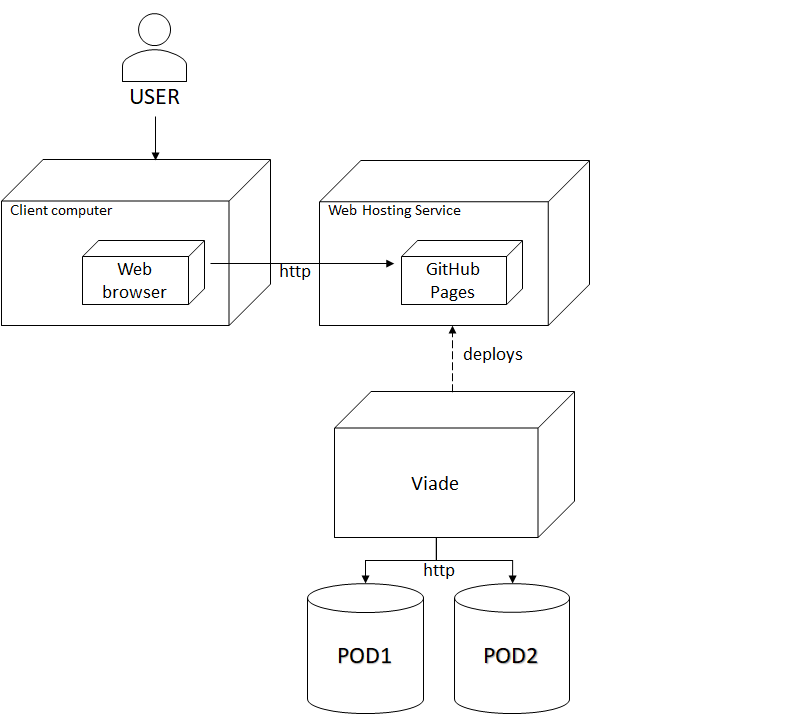
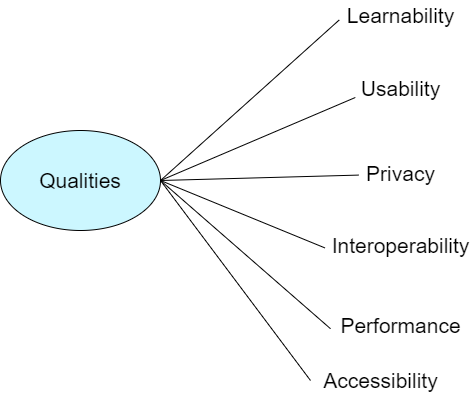

1. Introduction and Goals
The aim of the project is to create a decentralized routes management system based on the SOLID framework allowing users to control their own personal data.
-
Our application will consist of a decentralized architecture where user’s data is separated from the app.
-
Users can store their routes in their own PODs.
-
Users can visualize the routes stored on a map.
-
The app will allow a user to share pictures, videos or information about a route with other friends.
-
A user can get notifications when some friend shares a route with him.
-
Users can have groups of friends to share the routes with.
-
It should be possible to view routes loaded by users that are using a different app, so interoperability with other route management systems should be taken into account.
1.1. Optional Requirements
-
The system could be mobile compatible.
-
Users can share their routes in real time.
1.2. Quality Goals
| Priority | Goal | Motivation | Scenarios |
|---|---|---|---|
1 |
Usability |
The app must be easy to use by non-technical people. |
As a new user, I want to be able to use the app without needing any external help. |
2 |
Privacy |
Users must be the owners of their own data. |
As a user, I want to be able to choose where I want my own data to be. |
3 |
Effectiveness |
Users must be able to share their routes according to the functionalities of the system. |
As a user, I want to be able to share my routes with my contacts. |
4 |
Interoperability |
The system must be able to communicate with other similar SOLID apps |
As a user, I want to be able to share the routes loaded in my application with other similar SOLID apps. |
5 |
Accessibility |
We do not want to exclude people to use our app. |
People with disabilities must be able to use our app in a propper way. |
1.3. Stakeholders
| Role/Name | Expectations |
|---|---|
Developers |
Develop an application fulfilling the requirements that allow us to pass the course. |
SOLID Developers |
Help us with our doubts concerning the SOLID specifications. |
Course professors |
Evaluate our work and follow our progress throughout the course. |
End users |
Be able to use our application and take advantage of the functionalities. |
Project sponsor |
Spread decentralized applications so as they get known by the community. |
2. Architecture Constraints
2.1. Technical Constraints
| Constraint | Explanation |
|---|---|
ReactJS |
The application must be developed using the React Library. |
SOLID |
The application must be developed using SOLID standards |
GitHub |
The process of the development must be tracked through this platform. |
2.2. Organizational Constraints
| Constraint | Explanation |
|---|---|
Time |
The project must be delivered the 5th of May, 2020 |
Minute writing |
The team should have a weekly based meeting that should be documented. |
2.3. Conventional Constraints
| Constraint | Explanation |
|---|---|
Language |
The project, including code, comments, pull-requests, and documentation, must be done in English. |
Documentation |
Documentation must be done using the arc42 template. |
3. System Scope and Context
Our routes application will be managed following the SOLID standards. In other words, this tool will be decentralized which means that this application will allow each user to store and share their own personal routes without fearing any company using their data in ways they have not approved. However, we have some limitations, for example it would be more difficult to use and manage. Despite of this facts, this application is supposed to be interoperable, which means that it does not matter which application you use the data is the same for all of them.
3.1. Business Context

| Element | Role |
|---|---|
Arrow |
Flow of information. |
User |
User of the application. |
Viade |
Our application of Viade. |
User’s POD |
Personal storage of the user. |
Other User Viade |
External application which the user can share and receive routes. |
Maps API |
API of the maps, served by OpenStreetMap. |
3.2. Technical Context

| Partner | Role |
|---|---|
Red arrow |
Request made to a system, in order to know the direction of the requests. |
Blue arrow |
Response that a system provides for a given request, in order to know the direction of the information. |
Users |
People wanting to store and share their routes with control over their storage. |
Viade |
Our application that is supposed to be interoperable thanks to the use of Solid. |
POD |
Each user has a personal pod which stores all his information. |
Maps API |
Request are made to obtain the map so it can be rendered for the routes to be shown. |
3.2.1. Used APIs
The communication with the Solid API is done through the following libraries:
-
solid-auth-client: Authentication of users and handling of their credentials.
-
solid-acl-utils: Generation and handling of
.aclfiles for managing POD permissions. -
solid-file-client: Creation, retrieval and manipulation of files and folders in PODs.
-
rdf-query: Obtaining RDF information from PODs, mainly used for processing user profiles.
The communication with the maps API is done through the Leaflet library.
4. Solution Strategy
4.1. Introduction
In this section you will find the technology decisions and solutions strategies that we have chosen. Furthermore, we have reasoned why we chose them.
4.2. Decisions
The project is developed using the following technologies:
| Decision | Purpose | Advantage | Disadvantage |
|---|---|---|---|
ReactJS |
We will use this JavaScript library to build the user interfaces. |
It makes front-end understandable, easy and fast. |
At the start of the project, we had no idea nor experience working with React. |
Solid |
We have to store the user data in a Solid POD, which will allow us to make the application interoperable and decentralized. |
The information of each individual will be managed by each individual. |
Solid is still on development and is not easy to work with. |
Node JS |
We will use it for modules management. |
It offers a wide offer of package via npm. |
You have to be careful with the packages that you install as the may have vulnerabilities. |
Organizational decisions |
We have decided to work in an incremental way, using a branch dev for all the development of the application. Each functionality will be implemented in a new branch, when we need to commit changes to the dev branch we need to make a pull request. After everything is working on dev, we will make a pull request to master. |
We are sure that the final application has less errors, the pull request will ensure the review of other members of the team so they can give you feedback. |
You have to be careful when pushing changes and do not forget to make pull requests. |
Test-Driven-Development |
We agreed to write the tests first, so this will allow us to work faster when we have to extend the functionality of the application and be always sure if what we are doing is right. |
The implementation is previously tested, so you can ensure that the code you are writing is right or wrong. |
This approach can slow down development if tests become the main focus and developers try to make them perfect. Full testing might in some places need to be postponed or left as secondary for the aim of delivering on time. |
Travis |
Automatically build code, test code and provide and immediate feedback of the success of the changes. |
It gives you an automatic feedback of your code, so you don’t merge branches that are not mergeable. |
Sometimes it may confuse some commit and set them as wrong when they are fine. Also, warnings are treated as errors, so some builds might not pass because of an unused variable, for example. |
CodeCov |
Hosted analysis tool which provide statistics about our code coverage. |
It gives you an statistical percentage of test coverage of the application. |
It was impossible for us to make CodeCov ignore some files to avoid adding them to the statistics of the code coverage. |
Codacy |
Write quality code and make it understandable, using the readme for external users understand how the application works and provides information. |
It gives you a feedback of the code quality statistics with a grade. |
Some marked errors come from a misinterpretation of Codacy about the actual code or from discussed stylistic choices. |
Leaflet |
We will use this library for interactive maps. |
Open source, free, and easy to integrate. |
It is not as well documented as other alternatives as Google Maps. |
PlantUML |
Generate diagrams to comprehend a little bit better our solution. |
It is a deterministic and easy way to generate diagrams, as they are generated by code |
It is not the best design possible |
Selenium |
We use it in the end to end tests because we did not manage to use Pupputer. |
It has already been used in other subject, so it is a known technology. |
It may be more complex than Pupputer. |
Artillery |
We use this tool for the load tests. |
It can be run directly from Node, so users do not need to install any external tool. |
Reports do not have as good designs as Gatling. |
5. Building Block View

- Motivation
-
The system must handle routes defined externally, communicate with a Solid POD where they are stored and present a user interface built with React. These are three separated responsibilities and each of them can be contained in its own module.
- Contained Building Blocks
| Building block | Description |
|---|---|
GUI components module |
Offers an interface to the system for the final user. |
Parser module |
Provides methods to parse files. |
Redux module |
Redux module in charge of state of the whole application. |
Middlewares module |
Middlewares to perform async operations. |
Solid module |
Offers an interface to the Solid POD. |
Utils module |
Contains some utility methods needed in the application. |
5.1. Redux module

- Responsibility
-
Redux is used to manage the local state of our application.
- Contained Building Blocks
| Building block | Description |
|---|---|
Reducers |
Specify how the application’s state changes in response to actions sent to the store. |
Actions |
Payloads of information that send data from our application to our store. They only describe what happened, but don’t describe how the application’s state changes. |
Store |
It is the object that brings reducers, actions and the state together. |
Dispatcher |
Middlewares to perform async operations. |
- Reducers
-
-
AuthReducer: It is in charge of managing the information about the user’s data needed for the authentication.
-
LoadReducer: It is used to know when the user data has already been loaded.
-
RouteReducer: It manages all the information related to the user’s routes.
-
UserReducer: It is used to manage the user’s information once it is logged in.
-
LocaleReducer: It contains the information about the current locale.
-
RootReducer: It combines all the previous reducers into one. (Redux standard)
-
- Actions
-
-
AuthActions: It only has one action in charge of updating the local userWebId once the user logs in the app.
-
LoadActions: It has one action in order to change a property once the user logs in.
-
RouteActions: All the actions related to the routes: show a route in the map, upload a route, delete a route and share a route.
-
LocaleActions: It just has one action in order to change the locale.
-
UserActions: Actions in charge of loading the user data: friends, email, name…
-
5.2. SOLID module

- Responsibility
-
Redux module was in charge of managing the local state of the application. However, this SOLID module is actually in charge of managing the real data of the user from and to the POD.
- Auth
-
It has one method to obtain the user’s web id.
- ProfileInfo
-
It has methods to get the user’s mail and the list of friends.
- Routes
-
Its main responsibilities are:
-
Uploading a route.
-
Getting routes from the POD.
-
Deleting stored routes, either all or individually.
-
Sharing a route via a notification to another user’s inbox folder.
-
Reading the inbox folder and adding the referred routes to the shared ones.
-
Adding a comment to a route.
-
Obtaining the comments of a route.
-
Managing permissions of files.
-
This module has been tested by using solid-local-pod, a Nodejs library intended to serve a pod over localhost. While this covers all the activities our application does with routes, the many different configurations and unpredictability of real Solid PODs of real users can’t be fully covered by the functionality of this module, but we have tried to make it as resilient as possible while adjusting to the specification.
- Parser
-
Its main responsabilities are:
-
Translating an internal route to JsonLD and viceversa.
-
Giving the correct format for a notifications.
-
Getting the correct format for comments.
-
Getting the correct format of a basic ACL file.
-
5.3. GUI components module

- Responsibility
-
It contains all the React components needed for the GUI.
- Contained Building Blocks
| Folders | Description |
|---|---|
Dashboard |
It contains the main page of the application and the map component. |
Layout |
It has all the components related to the layout: navbar, login, settings, footer… |
Routes |
It has all the route components: routes list, upload route, route summary… |
User |
Components related to the user: profile, friends list… |
5.4. Middlewares module

- Responsibility
-
Interception point between dispatching an action, and the action reaching the reducer, allowing us to perform async fetches of information among other things.
- Middlewares
-
-
ProfileMiddleware: Fetches profile information about the user, and loads it into the state so it is available for the entire application.
-
RouteMiddleware: Fetches the routes of the user and loads them into the state, so they are available for the whole application.
-
LoggerMiddleware: Catches all the actions, and logs into the console information about the previous and next state of the application once the action is dispatched through the reducer.
-
6. Runtime View
The main runtime views of the application are the ones in charge of dealing with the routes and the user profile data. These views will be explained in detail in the following sections.
6.1. Activity diagrams
6.1.1. Upload a route
The user will be able to upload a route to his own POD.
-
A user will click a button on the "Upload route".
-
The user will write the name of the route and a description.
-
Then, he will choose the route to upload from his files system or he can write it by hand in the "Position" text area.
-
After that, he can attach a picture or a video
-
Finally, the route will be uploaded to the user’s POD and shown in our application.

6.1.2. Share a route
A user can share a route to one of his friends.
-
Firstly, the user must select the route he want to share.
-
Then, he must select the friend he wants to share the route with.
-
Finally, the route must be added to the friend’s POD and be able to be displayed.

6.1.3. Comment a route
A user will be able to post a comment in a route.
-
First, the user will click on the desired route to comment.
-
Then, the user will write his comment.
-
Finally, when the comment its written and saved, the route will have the comment in it.

6.1.4. Accessing a friend profile
Our users will be able to access from the Viade app to any of their friends profile.
-
First, the user should click on "My Profile"
-
Then, click on any of their friends of their friend list.

6.1.5. Checking notifications
In order to check for new notifications is quite simple:
-
First the user needs to click on the bell symbol of the NavBar.
-
Now, all the notifications will load, so the user can check them
-
Once he finish, the user can click on "Accept all", so all the notifications will be deleted and shared routes will be loaded.

6.1.6. Changing the application language
As all the user are not going to be English speakers, we add more languages, so this problem could be overcome. However, to change the locale (language) we need to:
-
First, the user needs to click on the "Settings" option of the NavBar.
-
After that, the user needs to click on "Available Languages".
-
Now, a new drop down menu will appear with all the possible locales ("languages"), so the user only needs to select one of them.
-
Finally, the application will refresh with the correct language.

6.1.7. Changing the application theme
Although our main audience/users will not have any vision deficiency (color-blindness), we have implemented a small support for those who have it. Also, we have added some extra customization themes. In order to change the theme the user needs to do the following steps:
-
First click on "Themes" in the NavBar.
-
A new drop down menu will appear with all the possible theme options.
-
Select the desired theme.

6.2. Sequence diagrams
The previous diagrams describe some actions but at a very high-level of detail. Now we are going to focus on some more difficult actions trying to explain them more in detail, at a low level.
6.2.1. Loading routes from POD

Since it is a bit complex diagram, we are going to explain it in detail:
-
A message is sent from the NavBar to the Redux store in order to load the routes.
-
The store dispatches the proper action.
-
A request for loading the routes is called and intercepted by the middleware.
-
The middleware is in charge of actually loading the routes asynchronously. Meanwhile, the reducer gives a response to the request.
-
Once the routes are loaded, there are two possible scenarios: everything worked or some error occurred. If everything worked, a load routes success actions is dispatched from the store, and the state is updated with the routes. On the other hand, if an error occurred while loading the routes, an error action is dispatched and the state is updated.
-
Finally, the state is received by the NavBar (whole application).
6.2.2. Displaying a route in the map

In this diagram we can perfectly observe again the redux architecture:
-
The user clicks on a route and an event is triggered.
-
An action is dispatched and the reducer updates the state.
-
Once the state is updated, the map component receives the positions of the route and the route is displayed.
6.2.3. Uploading a route

-
Firstly, the user enter in UploadRoute and fills in the data about a route.
-
Behind that action, the GPXParser parses the file into an array of latitudes and longitudes.
-
Then, all the Redux process starts.
-
The RouteReducer calls uploadRouteToPod and before writing the route in the pod we ask the parser to give us the route in JsonLD.
-
Finally, the route in JsonLD is written in the POD.
6.2.4. Sharing a route with a friend

In this diagram, we do not take into account the previous actions before the actual method of sharing in order to make the diagram as simple as possible, and focus on the SOLID part.
-
First of all, we see that the RouteReducer calls the method for sharing a route.
-
Then, we ask the parser for a notification in the correct format.
-
The notification is written in friend´s viade/inbox.
6.2.5. Accepting a notification

After a route has been shared with us, we need to do the following actions:
-
We need to go to the Notifications view and click "Accept all".
-
Then, we check /viade/inbox for new notifications.
-
We read the new notification from the POD and we ask the parser to give us the routeUri.
-
Finally, the routeUri is written in the corresponding file in /viade/shared.
7. Deployment View
Viade is running at client side on his web browser and connects to personal Solid POD’s. As a result the user just need a computer and a internet connection to be able to run our application.
7.1. Infrastructure Level 1

| Element | Description |
|---|---|
User |
People wanting to store and share their routes with control over their storage. |
Web browser |
It is used by the user to access Viade through his computer, for example, Chrome. |
GitHub pages |
Where the application is deployed. |
Viade |
Our application that use Solid and is deployed using GitHub pages. |
POD |
Each user has a personal pod which stores all his information. |
8. Cross-cutting Concepts
This section contains all the relevant information about different topics of the application, for example: domain concepts, user experience, architecture, security, etc. These are going to be relevant in all the application parts.
8.1. Domain Concepts
8.1.1. Route

Expressed using JsonLD, represents a user route, which can be shared, loaded, etc. It follows the Viade specification.
-
Name: name of the route
-
Description (optional): some information about the specific route
-
GeoCoordinates: list of GeoCoordinate that conform the points that form the route
-
UserComents (optional): list of UserComent that users have added to the route
-
Media (optional): list of Images and Videos that the author of the route added
8.1.2. GeoCoordinate
-
Latitude: in decimal degrees format
-
Longitude: in decimal degrees format
-
Elevation (optional): in meters
8.1.3. UserComment
-
Text
-
PublishedDate: in datetime format
-
Author: IRI to the pod profile of the user that published the comment
8.1.4. Media
Image
-
ContentUrl: direction for the resource
-
PublishedDate (optional): in datetime format
8.2. User Experience
First of all it is important to mention that as this is a web application to access the application it is necessary to have internet connection. Once you have it, you just need to open your browser and enter in the URL of the application.
After this, you just need to sign up in one of the two possible Solid Servers:
-
Inrupt
-
Solid Community Site
If you are already registered, the application will let you enter directly
The application follows a very intuitive interface, it has a main navigation bar placed at the top of the window that informs you about all the possible windows that you may access, which have all the functionality of the application. The main elements are the following ones:
-
Dashboard: Main Window that shows you a list of all the routes you have access to and a brief information about each one (name, author, map with its position).
-
My Routes: Allows you to see your routes all their comments, images and videos as well as their description. It also provides you to share a route to your friends, delete it and so on.
-
My profile: it contains all the information about your profile as well as yours friends. You can also upload a new route.
It is important to mention that all the user interface look and feel its the same for all the parts of the application so the user can identify our application just with watching its colors. Furthermore, we have used the Bootstrap library in order to make the creation of new components easier
8.3. Security
Currently the application is still in working progress so some security features may change in the future. Nowadays we have the following security functionality:
-
When a user that is not registered and tries to access a specific URL inside the application writing it on the browser, which could obtain it in the past. The security of the application must not allow you to access it and redirects you to the registration page.
-
Additionally, it is worthy to mention that all the security aspects related to routes are still in progress because we depend on the Viade specification. However, we could infer some of them, so for example in our upload route window, if you do not give it a name or description, you can not upload that route.
9. Design Decisions
9.1. Route specification
We follow the Viade Specification to set a format to manage the routes, so that interoperability can be achieved.
9.2. Leaflet
We chose this library because it is open source, free, and matches the philosophy of Solid.
9.3. Template
At the beginning of the course, we had to choose using the Inrupt Generator or not. After some discussion, we decided not to use it in order to learn React from the basics, because the main goal of this subject is learning how to design a software architecture, and with a template extracted from the internet you are force to use the one that is provided. This decision carried us some disadvantages, for example we lost some time learning React, but we consider it worthy because of the knowledge gained.
9.4. External Manual
As it might be difficult for tech newbies the SOLID concepts of our application, we have created an external webpage that will work as a manual of our application. This was done in another webpage so the actual application was separated from this manual. This external manual will be hosted in HERE.
10. Quality Requirements
This part shows all the quality requirements that the application should fulfill, as well as possible scenarios. This view will allow us to identify better the requirements of the application, in order to know which patterns should we take advantage of.
10.1. Quality Tree

10.2. Quality Scenarios
| Quality attribute | Stimulus | Response | Response measure | Priority |
|---|---|---|---|---|
Learnability |
A new user wants to learn how to use our application. |
The user reads our manual and he perfectly knows how to use our application. |
He will not need more than two minutes to read the manual. |
High, Medium |
Usability |
A user tries to upload a route file with a non-valid format. |
Our application shows a message informing about the invalid use. |
The message should appear in less than one second. |
High, High |
Performance |
A user wants to display a route in the map. |
The route is correctly displayed in the map. |
The route should be displayed in the map in less than one second. |
Medium, High |
Interoperability |
A user of another team signs in to our application. |
Routes should be correctly loaded. |
Routes are loaded in less than 5 seconds. |
High, Medium |
Privacy |
A user signs in to our application. |
The log in is done by the SOLID platform and we do not know his credentials. |
The users should be able to sign in in less than 5 seconds. |
Medium, High |
Accessibility |
A color blind (deuteranopia, tritanopia, protanopia) user wants to use our application. |
The user changes the theme of the application |
The user can correctly see the colors of our application. |
High, Medium |
11. Risks and Technical Debts
There are several risks and practical debts in the developing of this application for the managing, in a decentralized way, of the routes of an user.
Possible Risk |
Risk description |
Possible solution/hotfix |
Solid |
The use of Solid implies using a new experimental technology with not a lot of documentation. |
Keeping a record every action in the project and the use of a version control system, so a possible rollback could be done. |
React |
The developers didn’t ever use this framework. |
The only way to solve this is expending time of the project learning how to use it, and by try-and-fail. |
University |
As the members involved in this project are currently attending the University, and some of them might be in several years at the same time, it’s difficult to focus a lot of time in this project. |
A possible way to mitigate this huge problem is being extremely careful of how the developers expend their time, so they must be professional and organized. |
Travis-ci |
The use of a continuous integration tool is new for the developer team. |
A solution would be the familiarization with the configuration file of the tool. |
Viade spec |
All the teams must agree in a specification in order to achieve the interoperability between different Viade applications, and this specification is still in process, so some parts of the application and this documentation are subject to future changes caused by changes in the inter-group specification. |
It is difficult to agree on something so specific with so many people: for the moment, take general decisions and work with other groups for a consensus, adapting application and documentation when major specification changes occur. |
Description |
Motivation |
Route parser |
When parsing a route with more than one track, only the first one is taken into account because of simplicity. |
Reading friend comments |
Currently, if you want to see new friend comments you need to refresh the application. The use of web sockets should have been considered but we did not use them. |
Videos |
Because of simplicity, we only allow users to upload images of their routes. |
Deleting friends groups |
Because time limitations, in our application the feature of deleting friend groups was not implemented. |
Deleting routes |
When deleting a route, we do not check whether it has been shared or not, so in case it has been shared we do not delete it from friend´s pod. |
12. Glossary
| Term | Definition |
|---|---|
Personal Online Datastore |
|
Social Linked Data is a web decentralization project led by Tim Berners-Lee, the inventor of the World Wide Web. For further information visit the official page. |
|
A Facebook maintained library to build graphical user interfaces. For further information visit the official page. |
|
Template to communicate and document software architecture. For further information visit the official page. |
|
GPX |
It is an XML Schema design as a common GPS data format for software applications. For further information visit Topographix.com |
About arc42
arc42, the Template for documentation of software and system architecture.
By Dr. Gernot Starke, Dr. Peter Hruschka and contributors.
Template Revision: 7.0 EN (based on asciidoc), January 2017
© We acknowledge that this document uses material from the arc 42 architecture template, http://www.arc42.de. Created by Dr. Peter Hruschka & Dr. Gernot Starke.